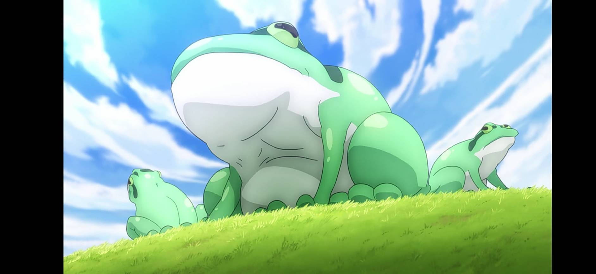
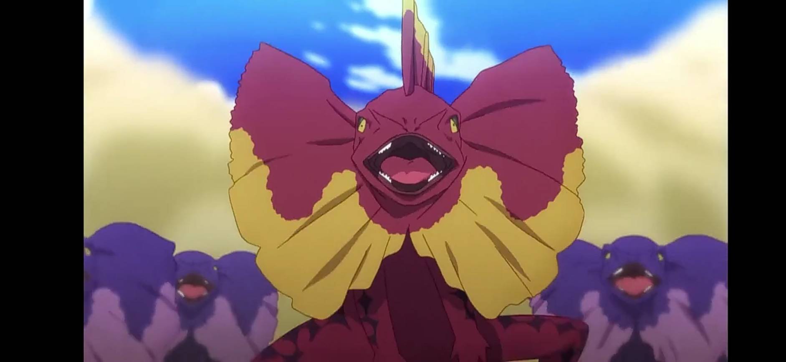

此網站由Playmaker特別製作(資料來源:維基百科)
其他 |
城市 |
冒險者相關 |
生物 |
在各地作惡多端（?）及打擊冒險者的邪惡（?）軍團。
它們巨大的身體比牛還大，一進入繁殖期就會想要爲了産卵而補充體力，因此出現在食糧較多的人類聚落，一口吞掉農家飼養的山羊。事實上，每年到了這種蟾蜍的繁殖期，聚落的小孩和農家的人也經常失蹤。而那厚實的脂肪，能夠抵擋打擊類的攻擊。它們討厭金屬，所以只要裝備夠齊全就不會遭到捕食。順道一提，它們的肉質雖然偏硬，但味道淡薄而清爽，是一種相當受到喜愛的食材。一隻蟾蜍的收購價格，扣掉搬送服務的費用，有五千艾莉絲。
這個世界的高麗菜會飛（有幾隻含混入萵苣）。據說，一旦味道開始濃縮、進入採收的時期，它們因爲不甘輕易被吃掉，就會奔馳過城鎮與草原，橫越大陸、遠渡重洋，最後在不爲人知的秘境內地悄悄斷氣，不被任何東西吃掉。
不死族是一種違反神之常理的怪物。神的力量在它們身上全都會産生相反的作用。對它們使用恢複魔法，它們的身體就會崩解。
那是比僵屍再高上一個階級的怪物，儘管是破爛的鎧甲，但裝備著防具的他們，對於新手冒險者而言已經足以構成威脅了。
原本貝爾迪亞命令不死騎士屠殺阿克賽爾，結果不死騎士通通去追著阿克婭跑由於有魔王加護的神聖攻擊也是無效。
和主流不死怪物吸血鬼並稱，是不死族的最上級。將魔法修練至爐火純青的大魔法師，藉由魔道之奧義舍棄了人類的身體，成爲人稱無生之王的不死者之王。和那些因爲強烈的遺憾和怨恨而自然變成不死者的怪物不同，是憑著自己的意志扭轉了自然的定理，而成了敵對於神的存在。除了施加過魔法的武器之外，物理攻擊對巫妖都無法産生作用，而且以吸取對方的魔力、生命力的「Drain Touch」爲首，巫妖具備的特殊能力可以在攻擊的同時，在目標身上引發各種異常狀態、下毒和麻痹、睡眠及詛咒。目前已知巫妖有維茲、基爾和在某個森林深處的某個宅邸長眠的巫妖三位。
居住於汙濁的湖水，淨化湖水的話自然會轉移棲息地。就大小來說，大概和地球上的鱷魚的平均尺寸差不了多少；不過，畢竟是怪物，和地球上的鱷魚還是有點不同。
這種怪物並不會對人類造成什麽危害，但相傳每打倒一隻雪精，春天就會提早半天來臨。
雪精之主，穿著厚重的白色日式甲冑，配上同樣雪白、作工細膩的陣羽織。原本並沒有特定的形體，是在接收了遇見精靈的人們無意識中想像出來的模樣，進而照樣實體化。也就是說，從日本來到這個世界的某個笨蛋，因爲說到冬天就想到冬將軍，才冒出了這個家夥。由於魔法防禦非常高，所有魔法幾乎對他起不了作用。
單一隻的力量並不算強，但他們基本上是集體行動，而且還會使用武器。屬於野生的亞人種，動作敏捷，體型偏小卻很兇暴，還會攻擊人類和家畜。
是貓科的猛獸，體型甚至超越老虎和獅子的那個家夥，全身長滿了黑色的體毛，嘴裏伸出像劍齒虎般的兩根長牙。喜歡在對於新進冒險者而言特別好賺、比較弱小的怪物，像是哥布林或狗頭人的附近遊蕩，並藉機狩獵弱小的冒險者。也就是說，他會以哥布林爲餌，引誘冒險者上鉤。而且他會定期追趕哥布林群，不讓他們定居，藉此改變狩獵地點，是一種狡猾的高危險度怪物。肉食性的初學者殺手眼睛是黃色的，但也有非常罕見的草食性初學者殺手，其眼睛是紅色的，喜歡吃桐樹果實。
雖然無法走動，但是可以將身體的一部分擬態爲寶箱或金錢，捕食走到他身上的生物。有時候他還會將身體的一部分擬態成人類，捕食那些會攻擊冒險者的怪物
喝的時候會變成汽水的謎之生物，喝下去後會有唰唰的口感，抓到尼祿依德的時候它還會「喵」地叫一聲。據說喜歡陰暗的地方，有各種各樣的衍生品種。
夏天的蜜柑得裝在籠子裡，因為要是稍微大意一點，夏天的蜜柑就會往人眼裏噴汁水。在這個季節，眼睛被蜜柑汁命中而倒地翻滾的人數不勝數。
是一種雙足步行的草食性蜥蜴，看起來像是將傘蜥蜴塗成綠色再放大的雙足步行爬蟲類。這種怪物平常並沒有什麽危險性，但只要稱作奔跑公主的大型母蜥蜴一出生，奔跑蜥蜴就會立刻變成非常棘手的生物。在奔跑公主的率領之下，奔跑蜥蜴會逐漸聚集成群，然後爲了和奔跑公主配成一對，成群的蜥蜴就會開始比賽。而它們的比賽方式是跑步。它們會以雙足步行的方式，發揮驚人的速度奔跑。而且，它們不是和同族並肩奔跑比拼彼此的實力，而是挑戰腳程很快的其他種族生物，並肩奔跑，進而超越對手。然後，超越最多對手的一隻，才能得以和奔跑公主配對，成爲率領蜥蜴群的奔跑王者。平時溫馴的奔跑蜥蜴，要是爲了賽跑，無論對手是馬還是龍，都會毫不畏懼地踢下去，然後直接逃跑。奔跑蜥蜴的踢腿非常犀利，要是踢中要害，可不是骨折就能了事的樣子。

鷹與鳶之間，進行異種交配而誕生的鳥類之王，長了老鷹的頭，骨架如同鴕鳥的那種鳥，速度比馬還要快，體型比牛還要大。明明是鳥類，那種怪物卻不會飛，反而具備驚人的腳力，得以高速沖刺。一旦找到獵物就會直接縱身一躍飛撲過去，是一種非常危險的怪物。進入繁殖期時，這種鳥的雄鳥爲了吸引雌鳥的注意，會透過稱作試膽競速的求愛行動，比看看誰最勇敢。它們會找上撞到肯定非死即傷的堅硬物體撲過去，是一種相當奇特的求愛行動。其中因爲剎車不及，一頭撞上硬物而喪命的情況也是屢見不鮮。
以雙腳站立的怪物。繁殖能力很強，一年到頭都是發情期。幾乎能夠和所有人形生物交配，被這些家夥逮到的話，下場會非常淒慘。公的半獸人老早以前就絕種了。現在即使偶爾生下的雄性也會被雌性們玩弄，在成年前就會被榨幹而死。因此現存的半獸人都是混血再混血，兼備各種族優秀基因的怪物，已經不能當成半獸人來看待了。現在說到半獸人，就是會抓住闖進它們地盤的不同種族的雄性並帶回聚落，再盡淩辱之能事的怪物，可說是男性的天敵。
這種植物型怪物並不會造成物理性的危害，但是會對路過的旅人做出激發強烈保護欲的行動，將旅人吸引到自己身邊。她的誘惑非常難以抵抗，一旦動了心，就會被囚禁到死亡爲止。一旦被絆住之後，這種檉物就會輕輕貼到旅人身邊，難以剝除。然後，照理來說旅人在感到饑餓時會想要離開現場，但這種怪物最危險的地方，就是會摘下長在自己身上的果實，分給旅人食用。這種果實非常美味，也能夠果腹……然而，其實這種怪物的果實幾乎沒營養成份，無論吃多少都只會讓人逐漸消瘦。旅人看見少女摘下自己的果實交給自己，更會受到良心的苛責，最後甚至不再進食，因營養不良而亡。安樂少女的果實當中含有造成神經異常的成分，持續食用將導致傅遞饑餓、睡意、痛覺等身體危險的訊號遭到阻斷。因此，受囚禁者將在少女的陪伴之下，處於半睡半醒的狀態，並昏昏沈沈地衰弱而死。由於年老的冒險者爲了尋求安穩的死法而前往這種怪物的棲息地的事例層出不窮，這種怪物才得到了「安樂少女」之名。之後，安樂少女會在死去的旅人身上紮根，以屍體爲養分。但本身沒有甚麼戰鬥力一般人都可以擊殺。
長著八個頭，八岐大蛇一樣的怪物。是住在阿克塞爾附近的山裏，平時都處於沈睡中的大額懸賞怪物。這家夥耗盡了體內積蓄的魔力後就會在湖底沈眠，開始從周邊的大地中吸取魔力。陷入沈睡的多頭水蛇需要近十年來再次積蓄魔力。多頭水蛇會使用魔力再生失去的頭，要打倒它，就必須用巨大到讓它無法再生的超強火力一舉炸飛，或者是讓它無數次負傷並對頭進行再生，在它耗盡魔力的時候給它致命傷。
異世界的蟬，與現實世界的蟬有很大的不同。第一，日本的蟬壽命大概是一周，但是這邊這種充滿了生命力與魔力的蟬能長壽到一個月左右。第二，蟬的音量非常大。恐怕是有日本的蟬的數倍大。第三，蟬晚上也照樣狂叫不止。因此，到了這個時節，男性冒險者會拋下一切瑣事優先參加大規模討伐。
稱爲雪精的亞種的白色毛球狀，可飄浮在空中且無害的精靈。要是過度欺負它們的話，統領它們的大精靈就會來襲擊。
被譽爲比大蔥鴨還要珍稀的人形怪物。
世道艱難，身在這個到處是怪物的世界裏，居住在連堅固的城牆都沒有的城市外面以山賊爲職是異想天開。那也是當然的，能有在棲息著許多怪物的環境中生存的戰鬥能力的話，比起不知何時能等來獵物的山賊一職，正經地當個冒險者能賺得更多的，也能住得安穩。因此山賊被視為毫無效率的職業。
變成不死族的龍，雖然龍族最拿手的吐息技能已經沒了，可是因爲不死化以後身體限制解除，它的物理攻擊可是能比生前的龍還要強大。
飛龍可是凶暴的肉食性怪物。惠惠接到土木工程的工頭與冒險者公會的委託，要把一塊擋路的大石炸了，但那塊大石頭上有幼小飛龍的巢，原本惠惠不忍下手，一聽到會得到屠龍者的稱號就把大石頭跟飛龍的巢一起給炸了。
被稱作河豚之王，雖然比起其他河豚來毒素要強上一個檔次，但這可是被美食家們讚爲「如果能吃上這個死了也無所謂」的絕品。
無攻擊力，但經驗值卻很高的生物，光吃大蔥鴨就可以升等級。惠惠被帶去參觀埃爾羅得王國王都的大蔥鴨養殖場，結果用爆裂魔法把大蔥鴨全給轟殺了。
佔據著埃爾羅得王國的金礦，龍的雜食是出了名的，恐怕是吃了金礦才會有這樣的膚色。在衆多龍種之中收購價格最高的龍，吃了它的肉能連長很多級，血能做稀有的魔藥，也是技能升級藥的素材，恐怕堅硬的角和鱗都能製作成最高價的寶具，這毫無疑問是座寶山。
回到最上面